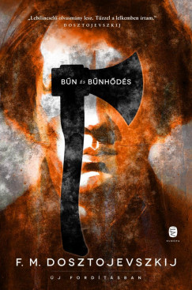
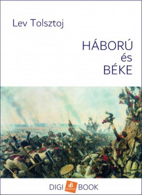
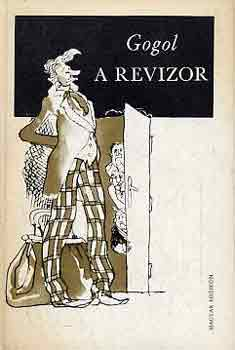
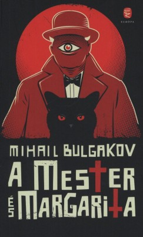
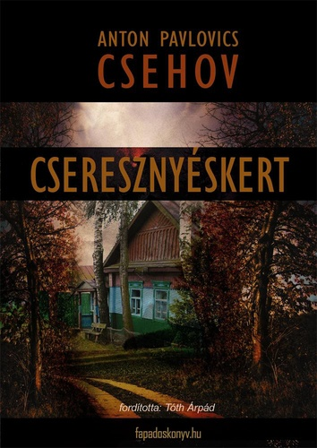

Dosztojevszkij: Bűn és bűnhődés
„Minden ember bűnös, csak más-más módon.”
Raszkolnyikov története egy fiatal értelmiségiről, aki erkölcsi dilemmába kerül, amikor elkövet egy gyilkosságot „nagyobb jó” nevében.

Tolsztoj: Háború és béke
„Az élet nem áll meg, csak átváltozik.”
Monumentális regény a Napóleoni háborúk idején, szerelemről, háborúról, és az orosz társadalom rétegeinek sorsáról.

Gogol: A revizor
„Nevetni kell mindenen, különben sírni kell.”
Szatirikus darab az orosz bürokráciáról és kisvárosi korrupt vezetőkről, akik egy idegent revizornak hisznek.

Bulgakov: A Mester és Margarita
„Kéziratok nem égnek el.”
Misztikus, szatirikus regény a szovjet Moszkváról, az ördög látogatásáról, Jézus történetének újraértelmezéséről és a szerelemről.

Csehov: A cseresznyéskert
„A cseresznyéskertet eladják... ez az élet.”
Dráma egy lecsúszó nemesi családról, a régi világ elmúlásáról és a változásokkal szembeni tehetetlenségről.